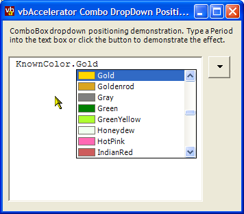

Combo DropDown Reuse (36K)
Combo DropDown Reuse (36K)
 23 Oct 2003
23 Oct 2003
First Posted

Reusing The ComboBox DropDown
Create simple and elegant auto-complete and other customised drop-downs
Normally, the combo box drop-down portion only appears underneath the combo box part of a control. However, using an age-old Windows hack you can get at the handle of the drop-down List and move it to any position you like on screen. This article provides a reusable class for manipulating the drop-down and also a rudimentary but effective demonstration of how to use it for auto-completion.
Hacking for Fun and Pleasure
The method of getting the handle to the drop-down ListBox associated with a Combo Box is a venerable hack which appears in many FAQs. To get the handle, you need to wait until the combo box drops down. When this occurs, one of the first messages sent to the Combo Box is a WM_CTLCOLORLISTBOX message from the drop-down list box. This message passes the ListBox's handle in the lParam member. And once you have the Window handle, you can subclass the it, or do any of the other things the Windows API lets you do to an object with a handle.
This article provides a class which wraps up the mechanics of getting at the drop-down ListBox handle and positioning the drop-down to your position.
Using The Code
The download provides four classes:
- DropDownPosition
This class provides the functionality for positioning a combo-box drop down. It is implemented as an extension to NativeWindow so can be assigned to any control containing a ComboBox using the AssignHandle method. Setting the PositionDropDown property to true tells the class that it should move the drop-down whenever it is shown to the screen location specified by the DropDownLocation property.
- ComboCloseUpDetector
This class supports the DropDownPosition class to provide a way of detecting when the combo box portion is closed up, as there does not appear to be an event for this in the Framework.
- DropDown
DropDown is an extended Framework ComboBox control which demonstrates using the DropDownPosition class for positioning the ListBox portion and keeping the ComboBox portion hidden (it is moved off screen). It renders a list of KnownColors with a colour sample box.
- AutoComplete
This class will be covered in the next section.
Using DropDownPosition
Using DropDownPosition should prove simple. The steps are:
- Create a ComboBox, and position it somewhere it will not be seen (for example, behind another control or off-screen). It is important to keep the control visible because otherwise focus handling will not work correctly, and the key events in the drop-down may not work.
- When the ComboBox handle has been created, create an instance of the DropDownPosition class, and use the AssignHandle method to attach to the ComboBox, passing in the ComboBox's handle.
- To show the drop-down, set the PositionDropDown property to true and the DropDownLocation property to the point on the screen where you want to show the drop-down (note that most controls have a PointToScreen function which helps work this out). Then set the ComboBox's DroppedDown property to true.
Typical code to achieve this is as follows:
using vbAccelerator.Components.Controls;
...
private DropDownPosition dropDownPosition;
...
private void frm_Load(object sender, EventArgs e)
{
comboBox1.Location = new Point(0x7FF0, 0x7FF0);
dropDownPosition = new DropDownPosition();
dropDownPosition.PositionDropDown = true;
dropDownPosition.AssignHandle(comboBox1.Handle);
}
private void frm_MouseDown(object sender, MouseEventArgs e)
{
dropDownPosition.DropDownLocation = this.PointToScreen(
new Point(e.X, e.Y));
comboBox1.DroppedDown = true;
}
The AutoCompletion Sample
The AutoCompletion sample demonstrates how to use this technique to provide a VBA/Visual Studio style auto-complete UI in a RichTextBox control. This sample is simple as it doesn't actually check what's been typed in the RichTextBox, nor does it vary the auto-complete options in a context sensitive way, but it does demonstrate how it would work and is otherwise very similar in operation.
The implementation of the UI logic is provided in the AutoComplete class. This class provides the following functionality:
- Provides a method, Start to show the Drop-Down and start auto-completion. This method installs two event handlers, one two detect when the drop-down is closed up and one to detect key events in the combo. Then it calculates the position for the drop-down in the RichTextBox and shows the drop-down.
- Performs auto-completion on typing in the combo box whilst it is shown in the comboBox_KeyPress method.
- Renders the current auto-complete text into the desired position in the RichTextBox in the RenderText method.
- Ends auto-completion when the combo box closes up and ensures any selected item in the combo box is entered into the RichTextBox.
Conclusion
This article has demonstrated how to get the handle of the drop-down portion of a ComboBox and re-use it to create custom UI effects. The AutoComplete sample, although simple appears to offer plenty of promise if it could be combined with a proper language parser.